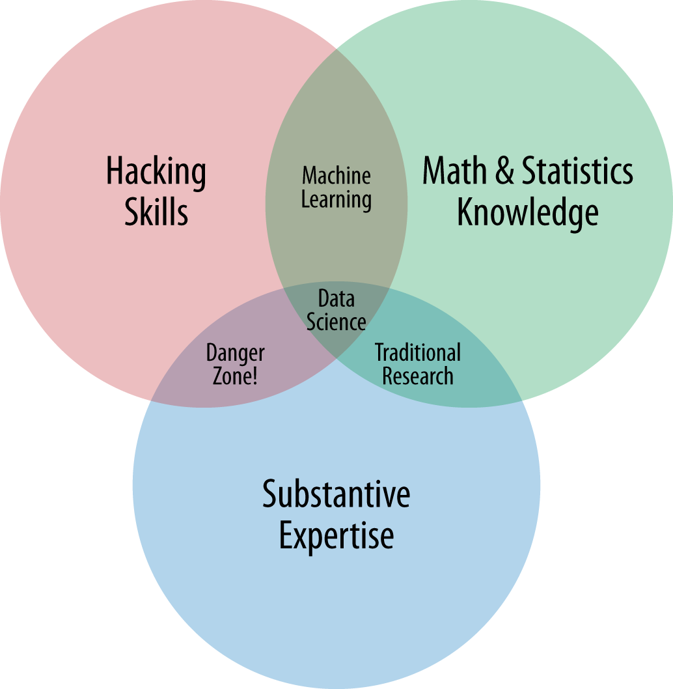

Welcome to data science lab!!
The lab is meant for scientific computing (computational science), and especially
collaboration in data science
(http://science.sciencemag.org/content/323/5915/721).
It is also meant for workshops and small classes (eight terminals
plus one for instructor).
As of 2020, these are some of the fastest, latest and greatest
computers (short of parallel computing) with 2K monitors for
productive scientific computing ( http://journals.plos.org/plosbiology/article?id=10.1371/journal.pbio.1001745),
which in general means producing reproducible research by writing
computer code and avoiding pointing-and-clicking.
Notably, the lab is open-source: it uses free community-developed
software
(https://www.linuxfoundation.org,
https://www.fsf.org).
location/access
We're in the back on the first floor of 321 Cooper St. You'll need the
key--ask any of the team members for help accessing the lab.
team
The lab is a community effort of the following team:
lab director / faculty lead: Adam Okulicz-Kozaryn
adam.okulicz.kozaryn@gmail.com
student volunteers:
- Straso Jovanovski sj372@scarletmail.rutgers.edu
- Shourjya Deb shourjyadb@gmail.com
howto use it? (interface)
Left-click on the "start" button at bottom-left or right-click anywhere on desktop and pick the program (note! can just hit on keyboard first underlined letter to run the program)
.
Or just hit F12 and type name of
program to run: available software is listed below.
To toggle between windows press Alt-Tab.
To mimic two monitors, there are two desktops. Desktop 1 (default): hit F1, and desktop 2: hit F2.
The main computer (named "father") with terminal at the head of the table is connected to the TV. You can also connect your laptop to TV using extra HDMI cable. And there is a remote to turn the TV on.
teaching in the lab
All displays can be shown and controlled on the main display (at the head of the table): run as root /home/lab/displays.sh and don't forget to kill it after instruction with /home/lab/displaysKill.sh
software
generic
run (same as F12)
terminal (bash shell: run there linux tools such as sed, awk, and pipe etc)
help (this page)
data science
python-spyder
rstudio
qgis
stata
utilities
file manager (to browse files like on win or mac)
firefox
latex-gummi
meld
text editor-leafpad
ooffice
pdf-editor
monitors
Note that the 4 terminals in the back have wide monitors and are best
suited for data science: can have easily code and interpreter side by side (say dofile editor and stata). And don't forget about two virtual screens using F1 and F2.
saving/disks
Write temporary work in /tmp/, it may be deleted after your session;
write permanent work into /mnt/commons.
Best create there a directory under your name so others know it's you;
It will stay, and will be backed up and is accessible for everyone for
easy collaboration, hence 'commons'. However, everyone has write access
there and it is based on common courtesy that no one alters your
work; if you'd like private space where only you can write, email our
team member and we will give you a user name and password and assign
private space on hard drive.
printing
Printer is located to the left of the lab, next to the restroom. You can print from oofice, pdf-viewer or data scinece software.
data science library
To rent books ask lab director, Adam.
O'Reilly books
2013data_science_salary_surv
Beautiful_Code
building_machine_learning_with_py
Code_Simplicity
ColumbiaUniversityAppliedDataScience
Data_Analysis_with_Open_Source_Tools
Data_Mining_in_Social_Science
data_science_for_business
data_scienceFromScratchJoelGrus
data-science-manual-skiena
data_source-handbook
doing_data_science
flowingdata
functionalProgrammingPY
going-pro-in-data-science
hadoopWithPython
introduction_to_Python_for_Econometrics,_Statistics_and_Data_Analysis
intro_to_mach_Learn
mining_the_soc_web_2ed
Natural_Language_Processing_with_Python
Practical_Machine_Learning_Anomaly_Detection
principles_of_big_data
programmingCollectiveIntelligenceAug2007
Programming_Python_Fourth_Edition
Python-Data-Science-Handbook-Jake-VanderPlas
python-for-data-analysis-pandas-wes-mckinney
python_for_econometrics
The_Art_Of_Readable_Code
think_bayes
think_complexity
thinkingWithData
think_python
think_stats
Ed Tufte books, to be added
Others, to be added
remote access and file transfer
You can access the lab remotely via ssh from RU network, email team member
for user name and passwd and go to:
userName@father.us.to
Likewise, you can transfer your files remotely via scp:
https://www.linux.com/learn/intro-to-linux/2017/2/how-securely-transfer-files-between-servers-scp. If
you're using mac or windows, just use scp client, if you don't have
one just google "scp windows client" or "scp mac client". Or just use
google drive, dropbox.com or a similar service. To connect your flash
drive/portable hard drive, ask team member for assistance.
jupyter
You can run Python, R, or Stata in Jupyter.
Browse to
to http://father.us.to:9999.
[If off-campus, install VPN and connect VPN first: https://wiki.td.rutgers.edu/wiki/Category:VPN]
Then enter Jupyter password provided, then in top-right click 'new' and
start say Stata (unless I have already started a notebook for you), then type in your code, say
sysuse auto
scatter mpg price
reg mpg price
and hit Run button at the top :)
Note that you can also upload files from the initial Jupter screen
(just make sure you hit upload button).
rstudio
rstudio is at
http://father.us.to:8787/.
[If off-campus, install VPN and connect VPN first: https://wiki.td.rutgers.edu/wiki/Category:VPN]
